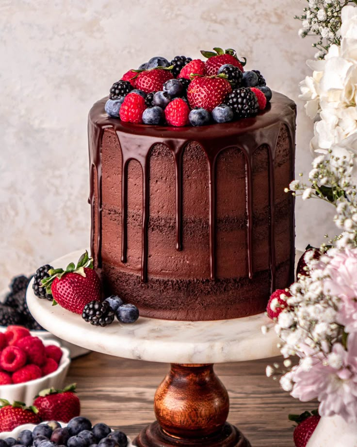

Chocolate Cake
Ingredients
- 1 3/4 cups all-purpose flour
- 2 cups sugar
- 3/4 cup cocoa powder
- 2 tsp baking soda
- 1 tsp baking powder
- 1 tsp salt
- 2 eggs
- 1 cup buttermilk
- 1 cup strong black coffee (hot)
- 1/2 cup vegetable oil
- 2 tsp vanilla extract
Instructions
- Preheat oven to 350°F (175°C). Grease and flour two 9-inch round pans.
- In a large bowl, mix flour, sugar, cocoa, baking soda, baking powder, and salt.
- Add eggs, buttermilk, coffee, oil, and vanilla. Beat for 2 minutes on medium speed.
- Pour batter into prepared pans.
- Bake for 30-35 minutes, until a toothpick comes out clean.
- Cool for 10 minutes, then remove from pans and cool completely.
Back to Cookbook